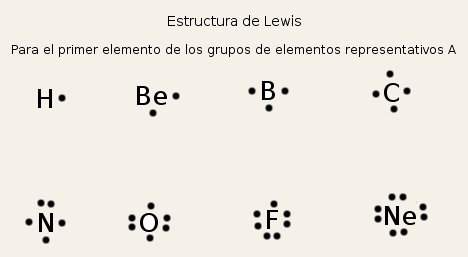
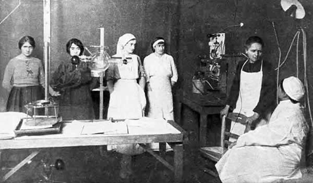
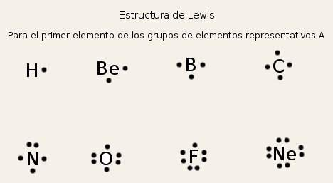
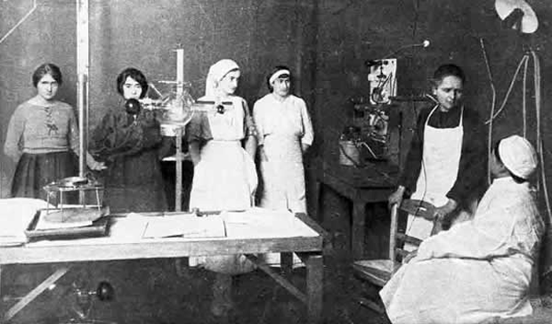

APORTES
En 1903 le concedieron el Premio Nobel de Física por el descubrimiento de los elementos
radiactivos y en 1911 la otorgaron un segundo Nobel, el de Química, por sus investigaciones
sobre el radio y sus compuestos. Marie Curie fue nombrada directora del Instituto de Radio de
París en 1914 y se fundó el Instituto Curie.

Mendel fué un monje austriaco del siglo XIX, estableció las leyes básicas de la
herencia genética mucho antes de que el término ¨gen¨ fuera acuñado.
Mendel llevó a acabo miles de cruces con distintas variedades de la planta del
guisante. Mendel explicó sus resultados describiendo las dos leyes de la herencia genética que
introdujeron la idea de los rasgos dominantes y los recesivos.
introdujo conceptos como electronegatividad y estructuras resonantes. En 1939 publicó sus ideas
sobre el enlace químico en un texto titulado "La Naturaleza del enlace químico". En 1954 recibió
el premio Nobel de química por su trabajo de la estructura molecular y la naturaleza del enlace
químico.

Mendeleiev fue un químico ruso que hizó grandes aportaciones como la Tabla Periodica, además de
resolver problemas de emisión de espectro de los elementos y determinar los volumenes
especificos (el inverso de la densidad = dividir volumen entre masa).
Mendelév se enfoco en el area dela química pero mas especifico en
los estudios acerca de laexpansión térmica de los líquidos
En 1916 formuló el modelo del átomo cúbico, y la idea de que un enlace covalente consiste en un
par de electrones compartidos y creó el término molécula impar cuando un electrón no es
compartido. Sus ideas fueron desarrolladas por Irving Langmuir y sirvieron de inspiración para
los estudios de Linus Pauling.

 


